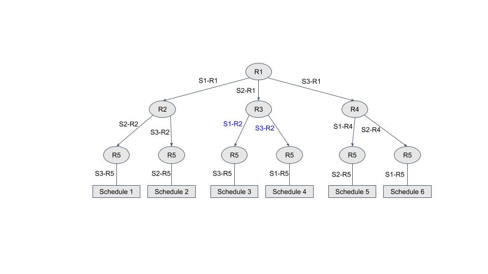

The paper has two labels in Fig. 1(b) incorrect. Please find the corrected labels in blue color in the following figure:
The paper has discrepency in the number of runs for Hermes for programs Monte and MatMat. The correted values are as follows:
| B'mark | #P | B | D | Hermes Runs |
|---|---|---|---|---|
| Monte (0.15) | 4 | ∞ | 4 | |
| 5 | ∞ | 5 | ||
| 6 | ∞ | 6 | ||
| 8 | ∞ | 8 | ||
| MatrixMul (2X2) | 4 | ∞ | 5 | |
| 5 | ∞ | 5 | ||
| 6 | ∞ | 5 | ||
| 8 | ∞ | 5 |